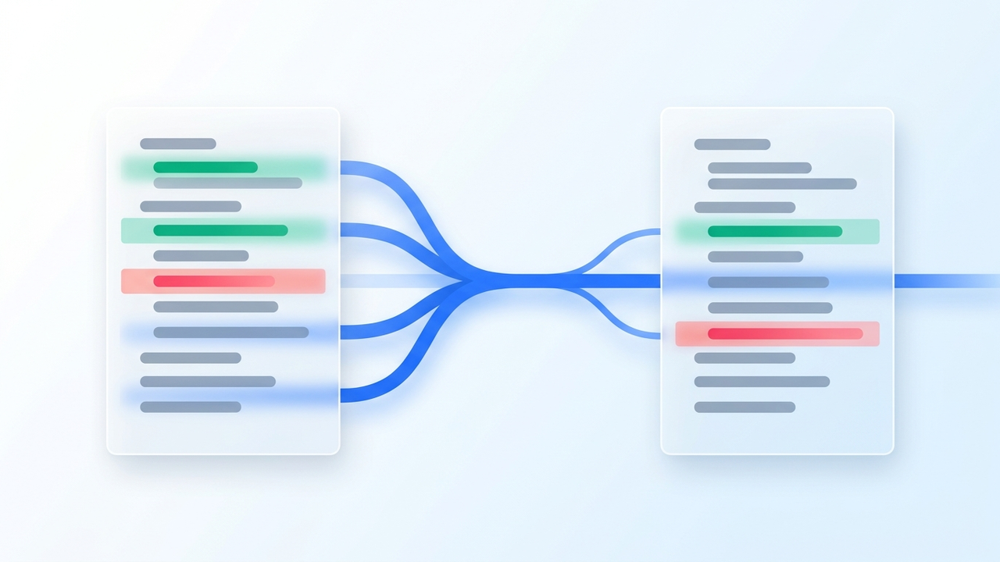

Built in PySide6 for speed, precision, and zero cloud lock-in. Compare source code with AST & intraline Line Details,
audit 3-way merges, sync folders & archives, inspect Word .docx, PDFs, images, Parquet/SQLite,
JSON/YAML/XML, OpenAPI/GraphQL/Protobuf contracts, and multi-GB binaries in one unified Fluent Light desktop workspace.

Every productivity essential popularized by Beyond Compare 5, Araxis Merge, and Kaleidoscope 5—engineered cleanly without bloat.
Inspect any line stacked character-by-character, switch between All Lines, Diffs Only, Context ±3, or Same Only, and anchor alignments manually.
Lock baseline panes against accidental edits or hunk transfers, convert UTF-8 / UTF-8 BOM / UTF-16 / CP1252 and LF/CRLF/CR, and auto-detect external file edits.
Extract text and tables from Word .docx, compare multi-page PDFs & SVGs, and hover image canvases for live (X, Y) RGBA pixel delta coordinates.
Merge Mine, Base & Theirs directories with conflict drill-down, flatten nested folders, handle ±2s skew, browse ZIP/TAR & SFTP/S3/FTP profiles, and sync safely.
Press Ctrl+K for universal command launch, Ctrl+G to browse repo changes directly as HEAD vs Working Copy, and configure Git tools in one click.
Secret Scrubber redacts keys before Ollama/LLM calls. Run CI pipelines with HTML, JSON, Side-by-Side HTML reports, and API contract breaking-change exit codes.
Switch tabs below to inspect each specialized engine and UI workflow.
How Diff & Compare Pro compares against established commercial desktop suites.
| Capability | Diff & Compare Pro | Beyond Compare 5 Pro | Araxis Merge Pro | Kaleidoscope 5 |
|---|---|---|---|---|
| License & Cost | Free / GNU GPLv3 Open Source | Paid Commercial | Paid Commercial | Paid Subscription |
| 2-Way Text + Line Details + Display Scope Filters | ✓ Included | ✓ Included | Partial | ✓ Included |
| 3-Way Merge + Output Preview + Undo | ✓ Included | ✓ (Pro only) | ✓ Included | ✓ Included |
| Folder Flatten, Archive VFS & Recycle Bin Sync | ✓ Included | ✓ Included | Folder compare | Folder compare |
| True 3-Way Ancestor Folder Merge Studio | ✓ Included | ✓ (Pro only) | ✓ Included | — |
| Remote Filesystems (SFTP / S3 / FTP / FTPS) | ✓ Profiles + VFS | ✓ Included | Remote / Plugins | — |
| Tree-sitter AST Semantic Diff (Moved Symbols) | ✓ Included | — | — | — |
| API Contract Audit (OpenAPI, GraphQL, Protobuf) | ✓ + CI JSON/HTML | — | — | — |
| Word (.docx), Multi-Page PDF & Image RGBA Inspector | ✓ Included | Word plugin / basic image | ✓ Included | Image/PDF (macOS) |
| Parquet & SQLite Native Diffing + Float Tolerance | ✓ Included | CSV/Excel tables | Excel/CSV | — |
| Visual Git Hunk Staging & Changeset Browser | ✓ Included (Ctrl+G) | — | SCM compare | Git changeset |
| Local-First AI Summary + Secret Scrubber | ✓ Ollama / Zero-Outbound | — | — | — |
Launch from Explorer, pipe from stdin, configure as Git difftool/mergetool, or automate release gates.
python app/main.py --folder-diff v1/ v2/ --report-html folder_report.html --exit-code python app/main.py --diff old.py new.py --report-html file_diff.html --exit-code python app/main.py --contract-diff openapi_v1.yaml openapi_v2.yaml --report-json contract.json --report-html contract.html --exit-code
git show HEAD~1:app/main.py | python app/main.py --diff - app/main.py
git config --global diff.tool diff_and_compare git config --global difftool.diff_and_compare.cmd "diff_and_compare.exe --diff \"$LOCAL\" \"$REMOTE\"" git config --global merge.tool diff_and_compare git config --global mergetool.diff_and_compare.cmd "diff_and_compare.exe --merge \"$LOCAL\" \"$BASE\" \"$REMOTE\" --output \"$MERGED\""
Power-user navigation across editors, merge conflicts, folders, and the command palette.
| Shortcut | Scope | Action |
|---|---|---|
| Ctrl+K / Ctrl+Shift+P | Global | Open Command Palette |
| Ctrl+G | Global | Browse Git Working-Tree Changes (HEAD vs Working Copy) |
| Ctrl+W | Global | Close active tab (Home tab stays pinned) |
| F7 / F8 | 2-Way Diff & Hex | Jump to Previous / Next Difference Hunk |
| Ctrl+Shift+A / Ctrl+F7 | 2-Way Diff | Manual "Align With..." anchor / Clear manual alignments |
| Ctrl+U | 2-Way Diff | Swap Left & Right buffers in-place |
| Ctrl+F / Ctrl+H | 2-Way Diff / Folders | Open Find & Replace bar / Focus Explorer Search |
| Alt+Up / Alt+Down | 3-Way Merge | Jump to Previous / Next Conflict |